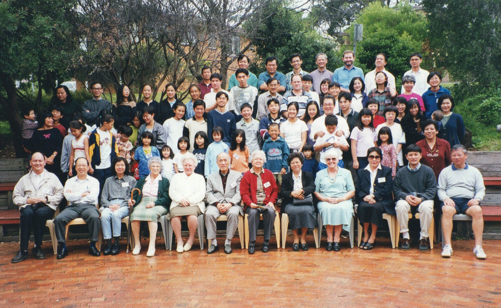
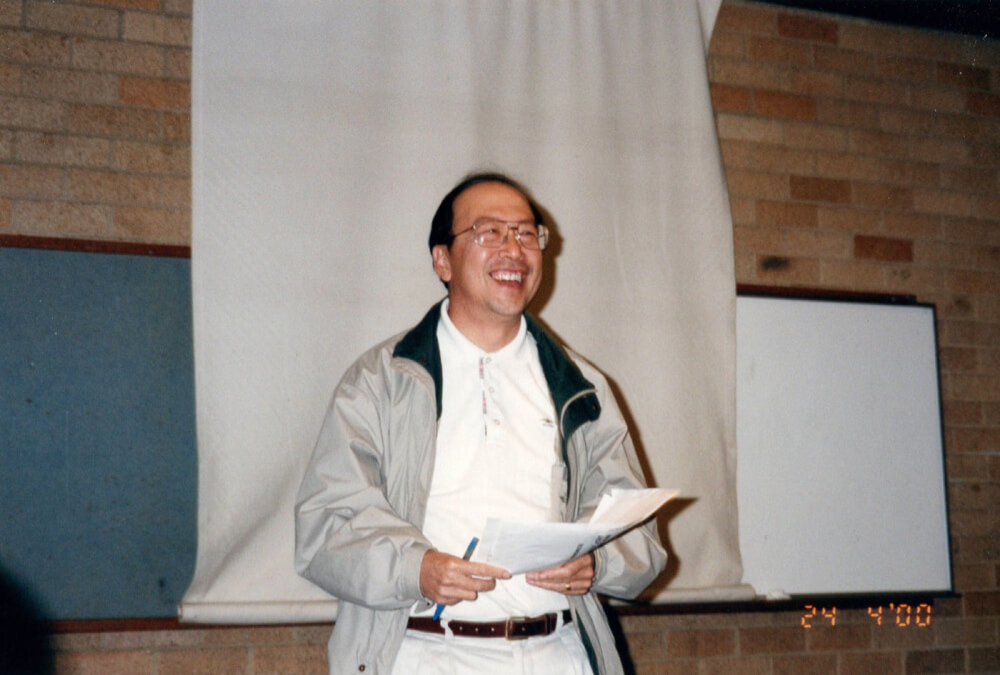
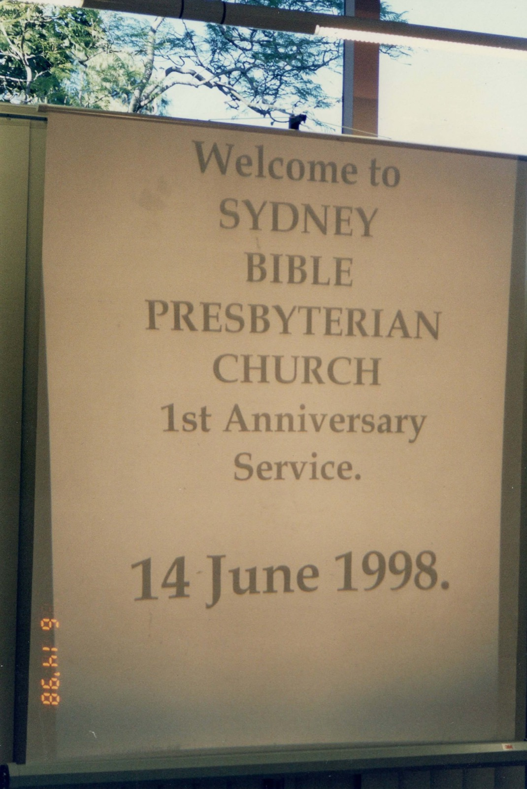
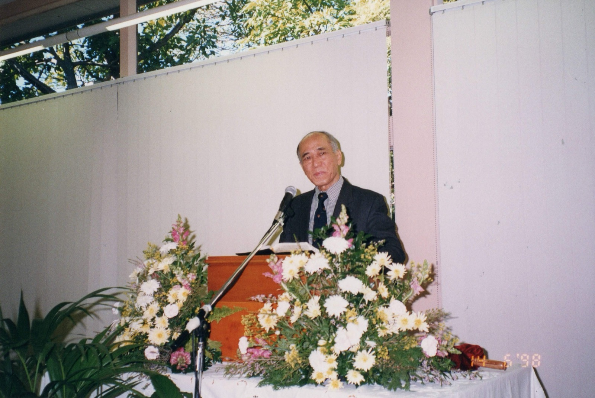
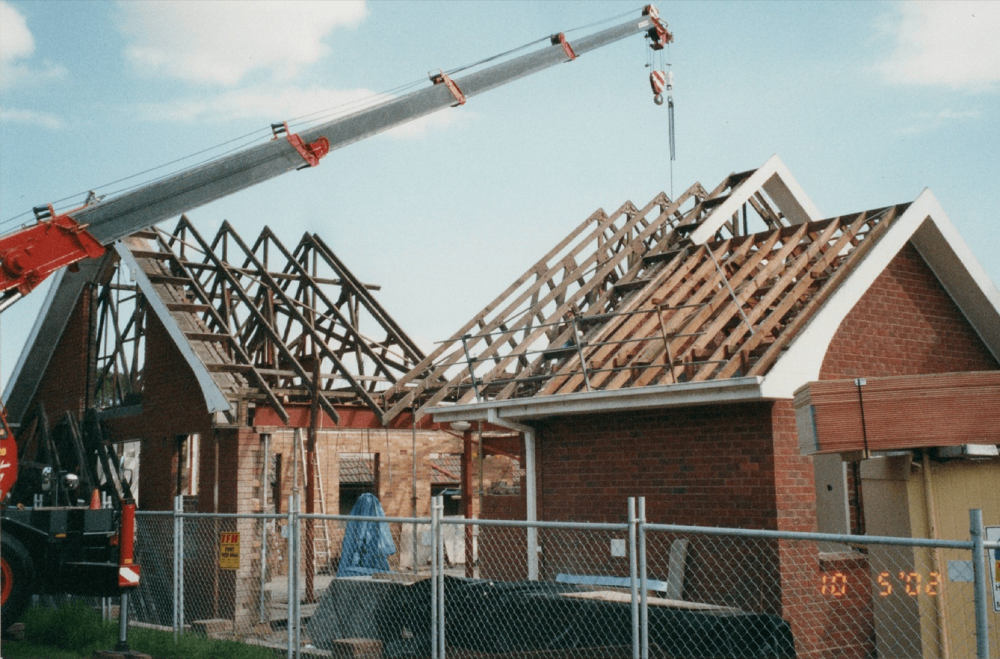
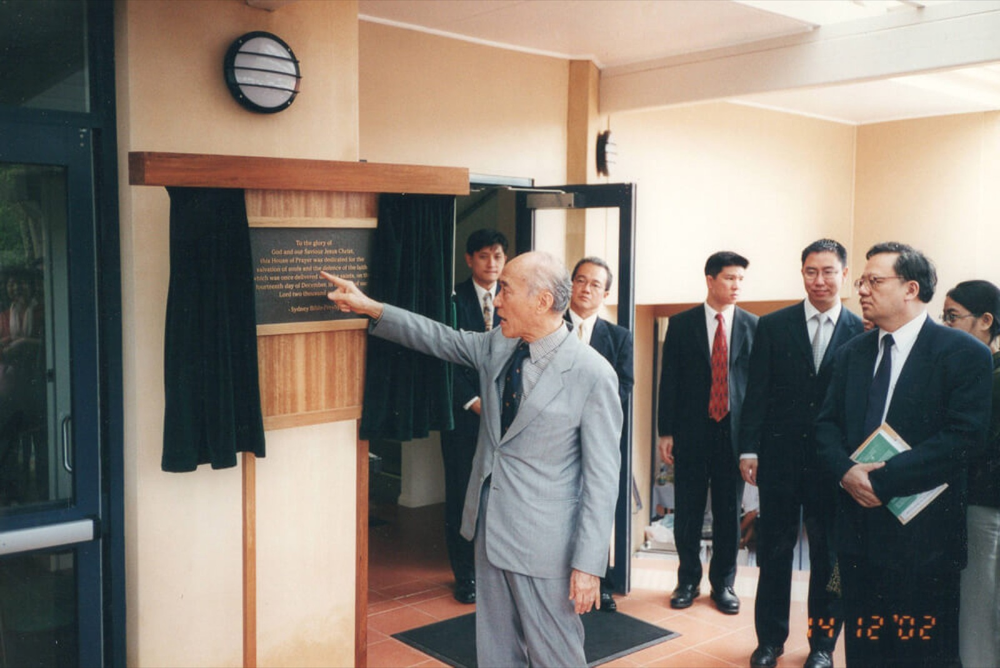

Our Story






Est. 1997
Sydney Bible-Presbyterian Church was established in Sydney in June of 1997 at a sister’s home in Pymble. The congregation initially comprised of about 25 regular worshippers.
A year after that we out grew the space and moved to a Community centre located at the suburb of Gordon.
In 2000
By God’s grace, we were able to purchase a property at 40 Stanbury Street, Gladesville.
Extensive renovations were done to completely transform an old building to a new multi-functional building to meet the needs of the growing congregation. Thank God for His provision, granting the members the opportunity to serve Him in this suburb.
In 2022
We praised the Lord for bringing us through 25 blessed years!
We continue to thank God for His mercy and grace, praying we will continue to serve Him faithfully till His soon return.